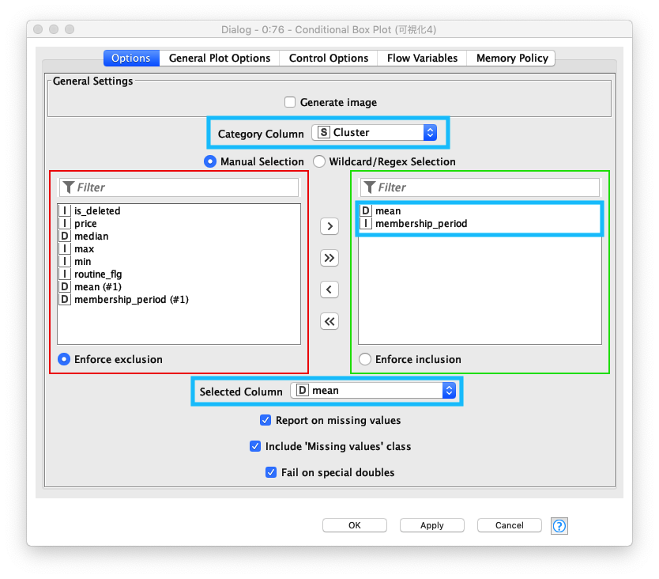
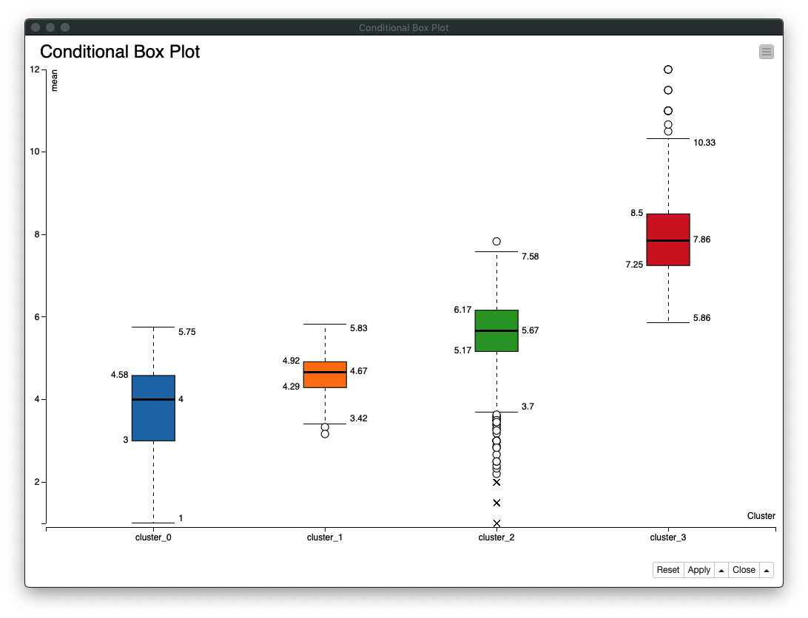
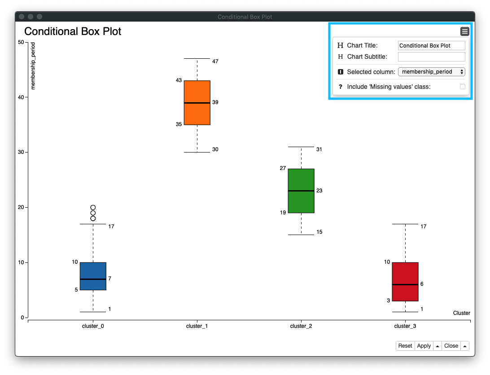

KNIME 入門編 / クラスタリング
KNIME 入門編 / クラスタリング
- 初版作成日: 2020-04-17
- 最終更新日: 2020-04-24
今回は、すでにデータ整形が終わっている分析用データ (トレーニングジム会員の利用履歴) を使い 会員のクラスタリング (クラスター分析) を行い、それぞれのクラスターの行動の傾向を確認します。クラスタリングとは、異なる性質・特徴をもつものが混在する集合から似た性質・特徴を持つグループを作ることです。基本的なデータ解析手法としてデータマイニングでも頻繁に利用されている手法です。
クラスタリングの手法がいくつかありますが、今回は、非階層クラスタリングに属する k-means を使います。 非階層クラスタリングは、予め作成するクラスター数を決定し、決めた数の階層を持たないクラスター (グループ) にサンプルを分割する方法です。サンプル数が極めて大きいビッグデータ分析に適しています。
ワークフロー全体
整形後データ読み込んだ後に、クラスタリングを実行し、最後にクラスタリング結果の可視化と集計を行います。
- 顧客+利用履歴データ (CSV形式ファイル) 読み込み
- データ探索 (確認)
- クラスタリング
- 可視化 + 集計
Fig. 全体ワークフロー

分析用データ読み込み
顧客データ + 利用履歴 CSVファイル 読込み
読込み対象のCSVファイルの文字コードが UTF-8 であることを事前に確認した後、KNIMEに 顧客データ + 利用履歴 (CSV) を読み込み設定を行います。主に 列タイトル行の存在、区切り文字 (delimiter) を設定します。KNIMEにデータのインポートが完了した後に、ファイルが正しくロードされているか確認します。
- ローカルファイルにある
顧客データ + 利用履歴 CSVファイルを指定し、Has Row Header (行見出し存在)のチェックを外す - CSVファイルの読み込み成功後、データプレビューエリアにレコードが表示される
Fig. CSVファイル 読込み 設定

Fig. CSVファイル テーブル表示

- 利用ノード: IO / Read / CSV Reader
クラスタリング / 処理
Fig. クラスタリング / 処理 / ワークフロー

準備 / データ探索
読み込んだデータが どのような特徴を持っているのか把握しておく必要があります。Data Explorer ノードを使い簡単なデータ分析 - 探索的データ分析 (Exploratory Data Analysis: EDA) を行います。次の情報を確認します。
1. 月の利用回数の分布
利用者の月の利用回数は、3回から5回が多いことがわかります
Fig. データ探索 / mean (利用回数 平均/月)

2. 会員期間の分布
会員期間は、1年未満の利用者が多いことがわかります。依って、一年以上の会員期間の利用者は、継続的に利用していることがわかります
Fig. データ探索 / membership_period (会員期間)

3. 退会会員数
退会会員数は、継続会員数の約半数ということがわかります
Fig. データ探索 / membership is_deleted (退会)

4. 月額金額の分布
月額金額は三種類あり [6000円, 7500円, 10500円] 、その中でも10,500円のコースの会員数が他のそれぞれのコースの二倍近くいることがわかります
Fig. データ探索 / membership price (月額)

5. 質的データの要約
データの要約 (サマリー) を見ていくと、このデータの概要を理解することができます。
end_date の結果は、退会した人が 2842人いて ユニークな値が 12存在します。「2842人が退会した日が12日ある」ことを意味します。その一方、start_date の結果は、「入会日は 215日ある」その日数は、退会日よりも多いことがわかります。その他、クラ数数、キャンペーンう数等を把握することができます。
Fig. データ探索 / Nominal

正規化
クラスタリング処理を行う前に 数値データのスケールを 0から1の範囲に線形変換 (Linear transformation) します。
正規化 設定画面で、正規化対象のカラム - mean (平均 利用回数/月), membership_pedriod (会員期間) を選択します。
Fig. Normalizaer 正規化 / 設定

正規化処理後、mean (平均 利用回数/月), membership_pedriod (会員期間) の各列の値が 「0〜1 の範囲」に変換されたことを確認します。
Fig. Normalizaer 正規化 / 正規化 後テーブル

クラスタリング
トレーニングジムの会員の行動傾向を4つのクラスターに分けます。クラスタリング 設定画面の Number of clusters (クラスター数) の値を 「4」に設定します。また、クラスタリングに必要なカラムに mean (平均利用回数/月) と membership_period (会員期間) の二つを選択します。
Fig. クラスタリング 設定

クラスタリング後の結果を コンテキストメニュー (ポップアップメニュー) の Clusters を実行し、4つのクラスターの存在と、それぞれのクラスターの値を確認します。
Fig. クラスタリング 結果 テーブル

クラスタリング 色指定
可視化した時に 4つのクラスターに属する値を容易に判別できるように、それぞれのクラスターの色を指定します。この処理に依り、生成されたチャートにプロットされた値がどのクラスターに属しているかわかります。
Fig. クラスタリング 色指定

クラスタリング / 集計, 可視化
Fig. クラスタリング / 集計, 可視化

テーブル結合
正規化処理で 実際のデータと異なる値を持つカラム (mean (平均利用回数/月), membership_period (会員期間)) が存在しているので、正規化前後のそれぞれの値を使えるように、正規化前の元のテーブルと正規化後のテーブルを結合します。
join modeにinner join (内部結合)を選択する- 結合するカラムに
left table、right table共にRow IDを指定する
Fig. テーブル結合 / 設定 (1)

right tableには、次の3カラムを指定する (重複するカラムを対象外にする)mean (平均利用回数/月)membership_period (会員期間)Cluster (クラスター)
Fig. テーブル結合 / 設定 (2)

集計
集計の目的は、クラスター別 会員の行動の特徴を把握することです。このセクションでは、「クラスター別退会者集計」と「クラスター別定期利用者集計」を行います。
クラスター別退会者集計
- グループ化対象カラムに、
Cluster (クラスター)、is_deleted (途中退会者)を指定し、クラスター別退会者 を集計する - 集計対象カラムは、
customer_id (会員ID)とし、集計方法はCountを指定する - 集計結果の着目点は以下の通り
cluster_0退会者数 が最も多いcluster_1継続会員数 が二番目に多い
Fig. 集計 / クラスター別退会者集計 / 設定 (1)

Fig. 集計 / クラスター別退会者集計 / 設定 (2)

Fig. 集計 / クラスター別退会者集計 / 結果テーブル

クラスター別定期利用者集計
- グループ化対象カラムに、
Cluster (クラスター)、routine_flg (定期利用フラグ)を指定し、クラスター別定期利用者 を集計する - 集計対象カラムは、
customer_id (会員ID)とし、集計方法はCountを指定する - 集計結果の着目点は以下の通り
cluster_2定期利用者数 が最も多いcluster_1定期利用者数 が二番目に多い
Fig. 集計 / クラスター別定期利用者集計 / 設定 (1)

Fig. 集計 / クラスター別定期利用者集計 / 設定 (2)

Fig. 集計 / クラスター別定期利用者集計 / 結果テーブル

可視化
データの中にあるカテゴリー同士の類似性や関係を理解するため、チャートをいくつか作成しデータの理解を深めます。次の三種類のチャートを作成します。
- Parallel Coordinates Plot (平行座標)
- Scatter Plot / 2D/3D Scatterplot (散布図)
- Conditional Box Plot (箱ひげ図)
1. Parallel Coordinates Plot
- Parallel Coordinates Plot (平行座標) を作成するのに必要な列、
mean (平均利用回数/月)、membership_period (会員期間)、Cluster (クラスター)を指定する - 各列の関係 -
mean (平均利用回数/月)=>membership_period (会員期間)=>Cluster (クラスター)を確認する
Fig. 可視化 / Parallel Coordinates Plot / 設定

Fig. 可視化 / Parallel Coordinates Plot / 結果

2-1. Scatter Plot (1)
- X軸に
membership_period (会員期間)、Y軸にmean (平均利用回数/月)を指定する - 各クラスターが色分けされプロットされていることがわかり、綺麗に4つのクラスターができていることを確認し、各クラスターの
membership_period (会員期間)とmean (平均利用回数/月)の関係も確認する
Fig. 可視化 / Scatter Plot (1) / 設定

Fig. 可視化 / Scatter Plot (1) / 結果

2-2. Scatter Plot (2)
- 「2-1. Scatter Plot (1)」と同じ
Fig. 可視化 / Scatter Plot (2) / 設定

Fig. 可視化 / Scatter Plot (2) / 結果

3. Conditional Box Plot
- Box Plot (箱ひげ図) を作成し、各クラスターの
membership_period (会員期間)とmean (平均利用回数/月)の**データのばらつき**を確認する Category columnにCluster (クラスター)を指定、対象カラムにmembership_period (会員期間)とmean (平均利用回数/月)を指定する
Fig. 可視化 / Conditional Box Plot / 設定

Fig. 可視化 / Conditional Box Plot / クラスター別平均利用回数/月

Fig. 可視化 / Conditional Box Plot / クラスター別会員期間

まとめ
データ分析の初期の段階でクラスタリングを行いサンプルをグループ化することで、より直感的にデータの特徴をつかむことができました。この分析結果を参考にして、会員の利用回数の予測、退会予測 等をすることができます。
また、データに不具合さえなければ、KNIMEには、既存のクラスタリングノード - K-Means があるので、短時間でクラスタリングを行うことができます。
Appendix / 利用ノード一覧
- IO / Read / CSV Reader
- Nodes / KNIME Labs / JavaScript Views (Labs) / Data Explorer
- Nodes / Manipulation / Column / Transform
- Workflows / KNIME Hub / Users / taka / Public / k-means
- Nodes / Views / Property / Color Manager
- Nodes / Manipulation / RowRow / Transform / GroupBy
- Nodes / Views / JavaScript / Parallel Coordinates Plot
- Nodes / Views / JavaScript / Scatter Plot
- Nodes / Community Nodes / Erlwood Nodes / Viewers
- Nodes / Views / JavaScript / Conditional Box Plot